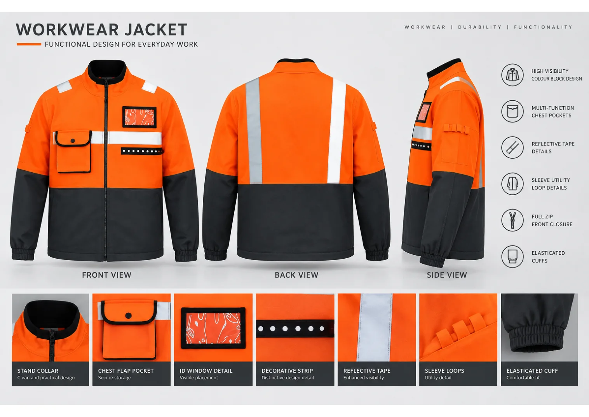
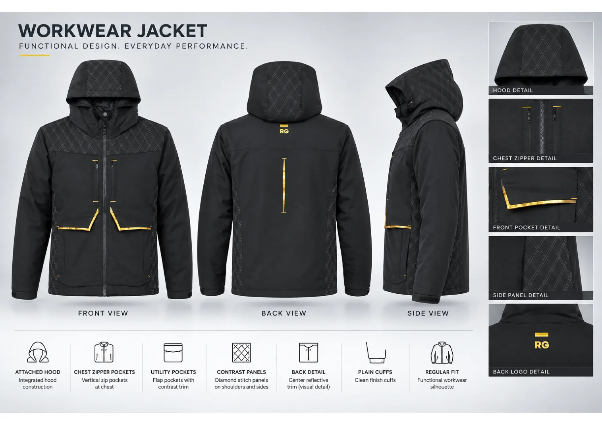
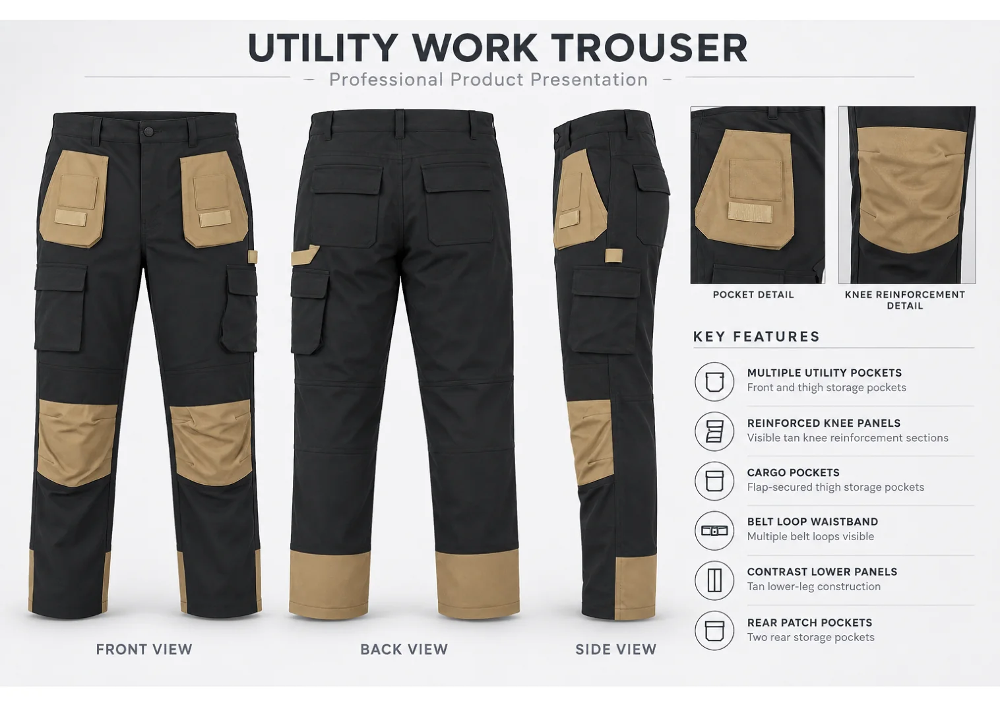
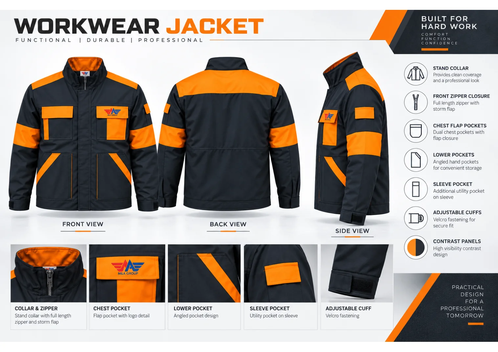
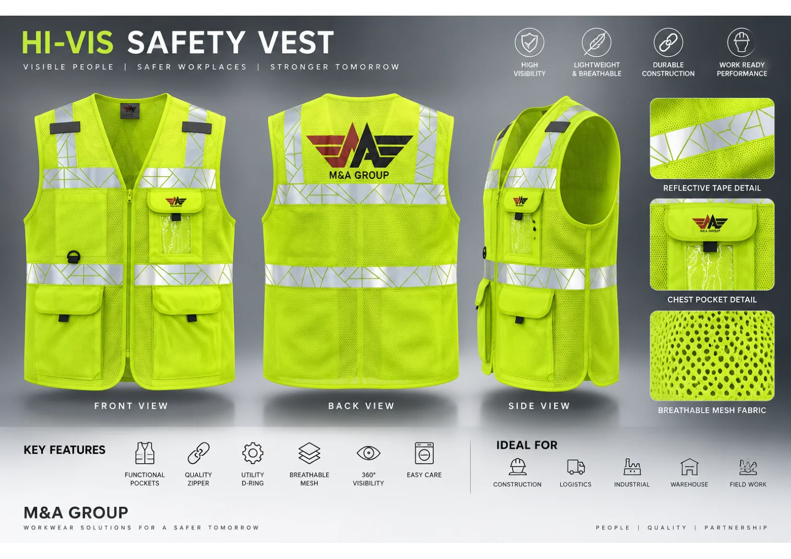
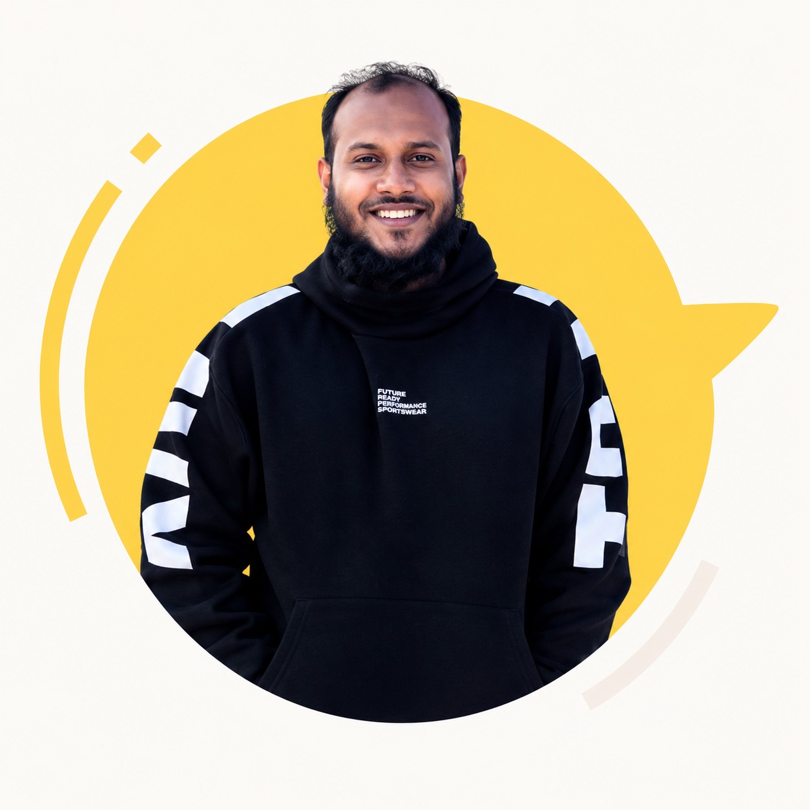

01 / 05
02 / 05
03 / 05
04 / 05
05 / 05I’m Kutub — an apparel merchandising, sourcing and product development professional helping ideas become production-ready products.

Good products don’t happen by accident. They happen when people, product details and processes come together.
I work across the moving parts that turn apparel concepts into production-ready programs: buyer communication, product development, sourcing, costing, quality follow-up and shipment execution.
My experience covers woven and knit apparel, with a particular focus on functional workwear, high-visibility garments, uniforms and fashion/lifestyle products. I enjoy making complex work clearer—one specification, sample, supplier conversation and milestone at a time.
Get to know my journey →A career built across apparel merchandising, product development and team coordination.
Leading a five-person merchandising team handling buyer-facing workwear woven and knit programs for EU and USA markets. Coordinating product development, China sourcing, costing, T&A and shipment execution.
Managed buyer communication and order execution for workwear woven and knit programs, working with factory, QA, planning and commercial teams.
Supported LPP Poland programs across product development, costing, bulk execution and cross-functional coordination.
Handled programs for Jennyfer (EU) and Grameen Uniqlo, including sample development, costing support and production follow-up.
Supported knit apparel programs, product development, trims sourcing, sample approvals and production tracking for export buyers.
Apparel Manufacturing Engineering · University of Dhaka · 2014–2017
Textile Institute Tangail
Practical experience across the apparel journey, from first brief to final shipment.
Turning product briefs into clear specifications, sample direction and production-ready information.
Coordinating China-based fabric and trim sourcing around quality, lead time and commercial needs.
Connecting buyers, suppliers and factories with milestone tracking and proactive follow-up.
Supporting costing review, price negotiation and commercial coordination with clear assumptions.
Keeping product requirements, testing considerations and factory quality follow-up visible.
Helping cross-functional teams align around decisions, responsibilities and delivery dates.
Great products come from thoughtful details, honest communication and people who care about getting it right.A WORKING PRINCIPLE, NOT A CLIENT TESTIMONIAL
Whether you’re exploring sourcing, product development, a professional opportunity or a potential collaboration, I’d be glad to hear from you.
kutub@mangrp.com ↗ Find me on LinkedIn ↗